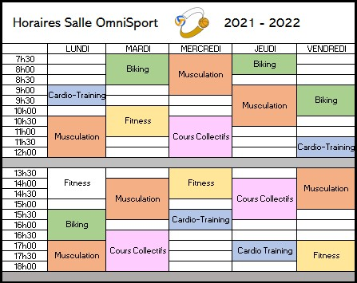
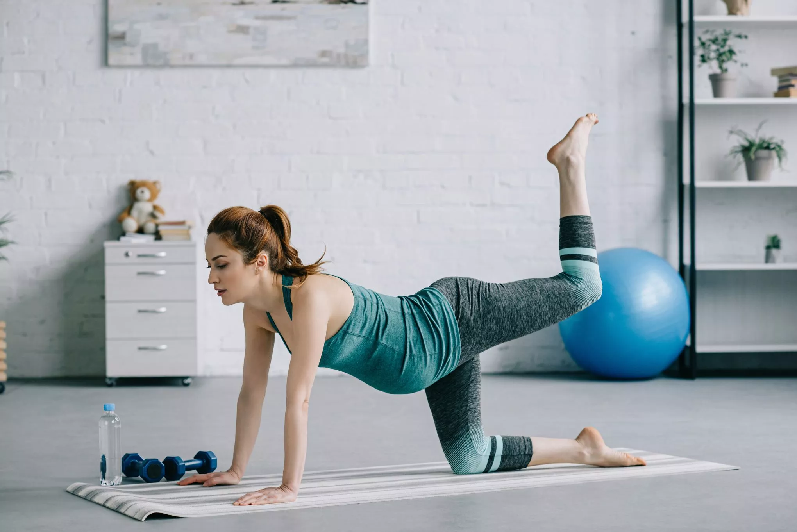

footer
Personnels de la Salle de sport

Léo MARTIN : Coach de Musculation
Jade BONNET : Coach de Cardio Training
Louise GARNIER : Coach de Fitness
Arthur BLANC : Coach Biking
Inès BOYER : Responsable des Cours Collectifs
Horaires de la gym
Ce calendrier hebdomadaire ne change pas. Il prend en compte uniquement les cours des différents coach de la salle de sport.
Si vous êtes membre de la salle de sport, vous pouvez accéder à la salle tout les jours de la semaine avec votre propre carte membre.
Règles pour une bonne séance à la Salle de sport
Se muscler et progresser sans se blesser
- Veillez à faire votre échauffement (activation cardio-pulmonaire, mobilisation articulaire et renforcement musculaire avec charges légères ou barre vide).
- Ne prenez pas plus lourd que ce que requiert votre programme. Il peut être dangereux de soulever des charges maximales.
- Rangez le matériel et vous éviterez des blessures. Ne laissez pas traîner les barres et haltères et ne les appuyez pas contre le matériel.
- Déchargez la barre en alternant les extrémités et posez les disques au sol.
- Evitez les séances intenses de musculation le même jour qu'un autre sport (course, cyclisme, natation etc..).
Règles sur l'utilisation des machines
- Le banc de développé-couché : Ce dispositif permet de cibler les muscles de l’avant bras, les biceps, les triceps ainsi que les muscles du dos et les abdominaux. Il faudra s’allonger sur le banc de la machine. Vous devrez ensuite soulever la barre au dessus de la table et commencer à faire des mouvements de soulevé et de relâchement.
- La presse à cuisse ou Leg extension : Il s’agit d’une machine pour muscler les hanches, les fessiers et les muscles des cuisses. Allongez-vous sur le support surélevé de l’appareil. Les pieds sont à plat directement sur la plateforme qui va exercer la pression à soulever.
- Le peck-deck : Il s’agit d’un appareil pour muscler les biceps, les triceps et les pectoraux. Il faut d’abord ajouter un poids adapté sur la machine pour mieux cibler les muscles. Asseyez-vous ensuite sur la chaise de l’appareil. Attrapez les poignées amovibles de chaque côté de votre tête et réalisez les exercices avec les manches de musculation du peck-deck.
- La poulie haute : La poulie haute est un appareil de musculation pour cibler les muscles du haut du corps. Avec vos deux mains, attrapez la barre au dessus de votre tête. Ramenez la barre au niveau de votre poitrine, puis revenir à la position initiale, et ainsi de suite.
- Le banc à abdominaux : Il s’agit ici d’un dispositif de musculation pour travailler les abdominaux et les obliques. Pour la réalisation de relevés de buste, vous avez à vous allonger tête baissée sur le banc. Les jambes sont maintenues par des boudins de fixation. Faites ensuite des relevés de buste en toute sécurité, en mettant vos deux mains à la nuque.
Comparer les Abonnements
Alimentation et Nutritions
Pourquoi et comment faire attention à ce que l'on mange?
Pour être équilibrée, votre alimentation doit être suffisante du point de vue énergétique et la plus diversifiée possible. Vous devez garantir une bonne répartition entre protéines, lipides, glucides et un bon apport complémentaire en vitamines, minéraux et fibres.
Même si vous n’êtes pas un sportif de haut niveau, vous devez vous entraîner régulièrement pour vous maintenir en forme.
Même si vous ne faîtes pas de compétitions sportives, lorsque vous participez à des activités physiques, votre alimentation contribue à maintenir la forme.
Règles sur l'utilisation des machines
- Manger au moins 5 fruits et légumes par jour.
- Vous devez apporter des aliments céréaliers (pain, pâtes, riz…), des pommes de terre ou des légumes secs à chaque repas.
- La viande, le poisson ou les œufs doivent figurer au moins une fois par jour, en privilégiant le plus souvent possible le poisson.
- Même si l’on fait du sport pour maigrir, ne pas oublier l’importance des matières grasses en quantité limitée et en privilégiant celles d’origine végétale.
- Si vous consommez des boissons alcoolisées, votre apport quotidien d’alcool ne devra pas dépassez deux verres de vin de 10cl, ou deux bières de 25 cl, ou 6cl d’alcool fort.
- Avant, pendant et après l’effort, n’oubliez pas de vous hydrater, boire de l’eau à volonté avant d’avoir soif.
Gynécologie
Sport Autorisés :
Certains sports peuvent être pratiqués durant la grossesse,car ils ne sont en aucun cas des menaces pour celle-ci:
- La natation et l'aquagym
- Le yoga, la danse et la gym
- Le vélo, la marche à pieds, la course à pieds
- Le tennis et le golf ...
Sport à éviter :
En règle générale, mieux vaut éviter des sports intenses, longs, nécessitant un effort abdominal. Préférer plutôt des sports non violents, éviter les secousses, les chutes et les mouvements brusques.
- Sports de combat (judo, karaté, aïkido, boxe, escrime) et autres arts martiaux, basketball, volley ball, hand ball : risque de traumatisme abdominal.
- Plongée sous marine, à cause du manque d’oxygénation qui peut être dangereux pour le fœtus.
- Alpinisme, essentiellement au dessus de 2000 mètres d’altitude du fait du manque d’oxygénation
- VTT, roller et ski nautique (risque de chutes)
Quelques conseils :
- Savoir d’hydrater avant, pendant et après l’effort.
- Savoir s’alimenter de façon équilibrée et saine : alimentation riche en potassium pour éviter les crampes. Favoriser la consommation de fruits, de légumes et de viande.
- Savoir ralentir ou s’arrêter en cas d’essoufflement. Ne pas dépasser les limites du raisonnable. Être à l'écoute de son corps.
- Arrêter son activité en cas d’apparition d’une douleur anormale.